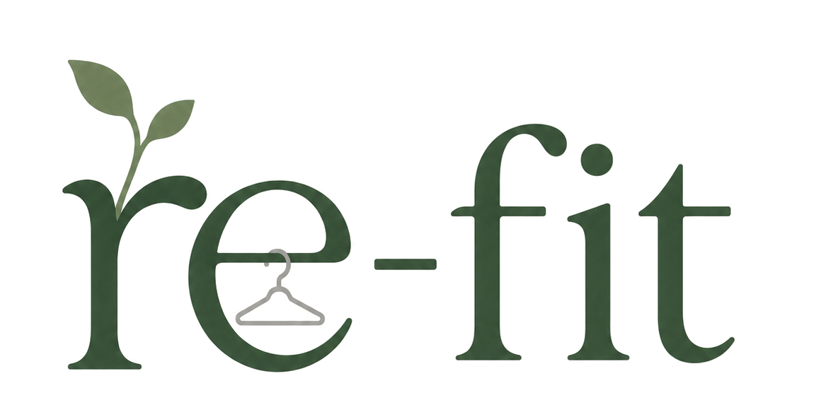
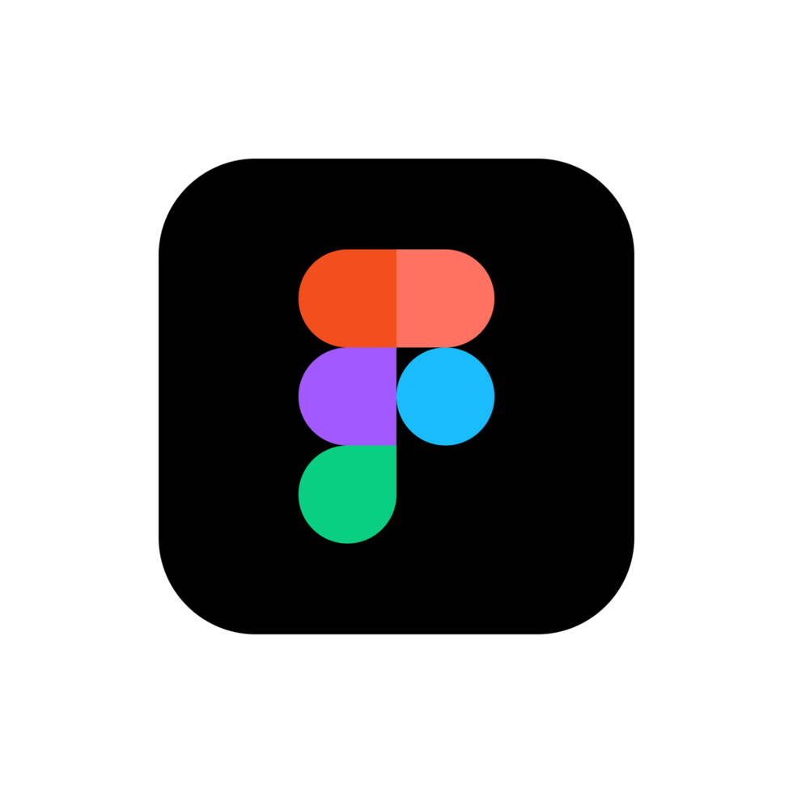

Digital Closet
All your scanned clothes live in one clear wardrobe. See what you own and plan outfits without digging through your closet.

Why reusing clothes matters

Re-fit is an app that digitizes your wardrobe, helping you track what you own and wear. With a clearer picture of your closet, you can decide which pieces to donate and help reduce unnecessary clothing waste.
From your closet to a new home
(Flip the cards!)
Re-fit can point out similar pieces in your closet or items you have not worn in several months, helping you decide what you might donate.
All your scanned clothes live in one clear wardrobe. See what you own and plan outfits without digging through your closet.
Add clothes by scanning a receipt or tag, or by taking a photo. Save item details like size to make donation sorting easier.
Choose the items you wore from your wardrobe or take an outfit photo and let AI log it for the day.
See how often you wear each piece and find similar items, so it is easier to spot clothes you may be ready to pass on.
Find nearby nonprofits and donation centers for the clothes you are ready to give away. Re-fit can also help you sort by size before drop-off, making it easier for volunteers to process donations.
A more thoughtful relationship with what we wear
We imagine a world where every piece of clothing gets noticed, valued, and worn again.
A digital closet helps people understand what is already in their wardrobe and make more intentional choices.
Wear tracking and gentle insights can make overlooked pieces easier to rediscover, rewear, or pass along.
Finding nearby donation partners and preparing clothes thoughtfully can help useful garments reach new owners.
Our goal: help build habits that keep clothing in use for longer and reduce avoidable textile waste.
Where we hope to grow
Get outfit ideas from clothes already in your digital closet, making it easier to rewear what you own.
Scan several clothing pieces in one video to make building a digital wardrobe quicker and simpler.
Keep a sustainability pet growing with streaks for scanning clothes and logging outfits. In the future, Re-fit could also help people resell pieces as another way to keep them in use.
One thoughtful step at a time
From the first idea to the work underway now, here are the steps behind Re-fit.
Completed
The first idea for helping people make better use of the clothes they already own.
Completed
Created a Google Form to learn what people think about a digital wardrobe and the features they would find useful.

Published
Shared Re-fit for the first time on Instagram.

Completed
Wrapped up the research that helped shape the project and its direction.

Completed
Completed the first Re-fit prototype.

Started
Began building this website to share Re-fit’s purpose, progress, and ideas.